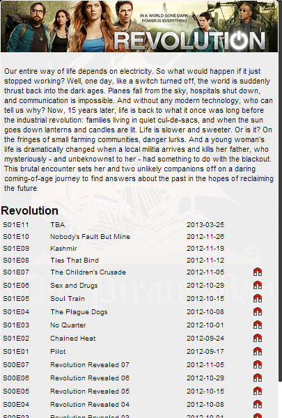
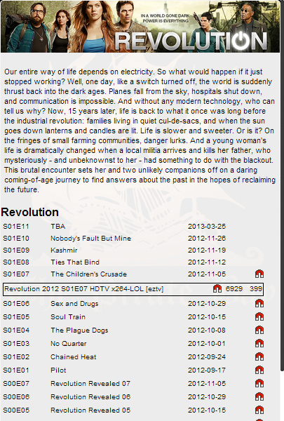
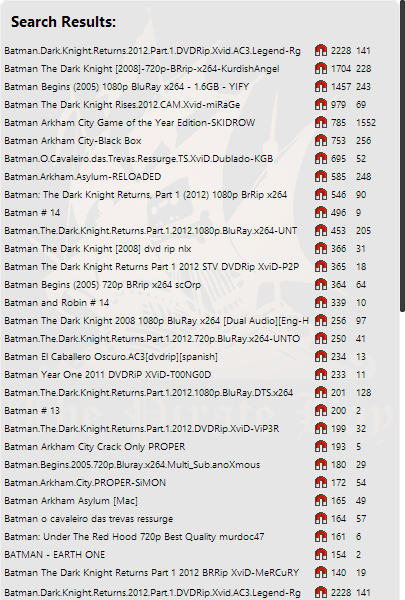
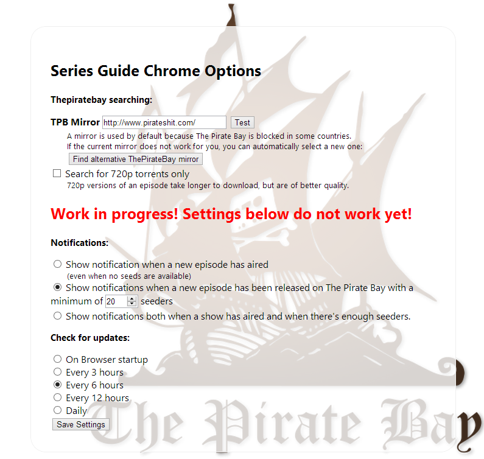

seriesguide-chrome
A chrome plugin to manage your favorite tv-shows and their schedules with automagic ThePirateBay integration
Installation:
- download the .crx file
- Open your chrome extensions tab (menu -> extra -> extensions)
- drag the .crx to the extensions tab to install
Changelog:
v0.4- Added generic ThePirateBay Search (listens to 720p preference)
- Fixed some bugs in the layout and interaction when searching torrents
- Netbook support (list now scrolls properly on low height devices)
- ThePirateBay mirror is now configurable from te options page
- Implemented automagic ThePirateBay Mirror Search using FuckTimKuik.org
- Added an option on settings page to search only for 720p torrents
- Implemented auto-update. If you installed v0.2, You will have to do a manual update. (go to extra -> extensions -> remove the plugin, re-install it)
Usage:
- Your main screen is the favorites view
- Add your favorite series to the list by searching for it and clicking 'Add to favorites'
- After adding, the schedule shows under the show details.

- Click the magnet icon behind each aired show to to a tpb search ordered by max seeds and show the first result

Click the magnet link that pops up to start the torrent download! - Use the generic search box to find anything on ThePirateBay, ordered by seeds. automagically searches for 720p if checked in settings.
 - On the Options page (right click the icon, or open it from chrome extensions) you can configure an alternative ThePirateBay mirror and optionally search for 720p releases only. 
C'est ca!
More to come
- better cacheing and local storage
- Check for updates once a day and show alerts / automagically download
Set tpb mirrors.- Alternative searchqueries per serie
- fill dates for next episode and airdate
- A generic watch list, that monitors R5 movie (or any?) releases, and notifies/auto-downloads.
Nerdtalk
Interested in the source? Check the couple of lines of js here.
Feel free to extend and send pull requests
This project cannot be found in the chrome extension store because the Terms of service do not allow it!